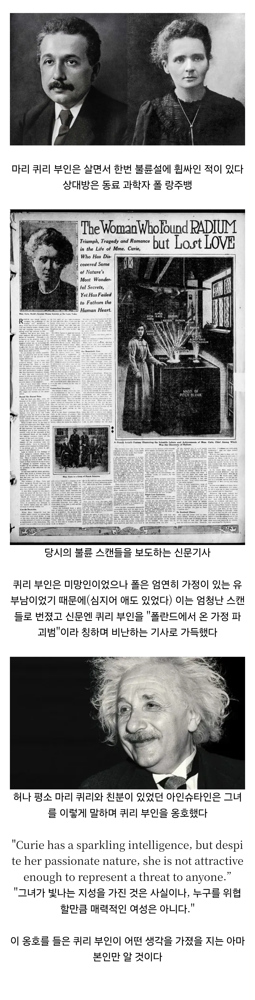

쉴드(로) 침

쉴드(로) 침
고맙다
??? : 고맙다 시ㅡ발아 ㅋㅋㅋㅋ
ㅋㅋㅋ
퀴리 : "하... 씹새끼..."
정작 본인도 가정문제는 참 말 많았던 양반이지 ㅋㅋㅋㅋㅋ
아인슈타인은 일반적으로 너무 연구에만 매달려 아내나 가정에 소홀했다는 식으로 알려져 있는데, 연구도 연구지만 아인슈타인은 유대인으로 제1차 세계 대전 도중 중립국으로 피신했고,
첫 번째 아내인 밀레바와 떨어져 있는 시기 동안 친척 누나이자 당시 과부였던 엘자와 친해진 것으로 알려져 있다.
엘자는 1876년생으로, 아인슈타인의 아버지의 사촌의 딸이자, 아인슈타인의 어머니의 언니의 딸이다. 따라서 이종사촌 누나 겸 6촌 누나가 된다.
출생 당시 성은 아인슈타인이었는데, 결혼하면서 남편인 막스 뢰벤탈(Max Löwenthal)의 성을 따라 성이 뢰벤탈로 바뀌었다가 아인슈타인과 재혼하면서 성도 도로 아인슈타인으로 되돌아갔다.
자녀로는 전 남편 소생의 딸 2명이 있었다.
엘자와 결혼하기로 결정하면서 아인슈타인은 밀레바를 소홀히하고, 결국 이혼하게 된다. 그렇게 1919년 밀레바와 이혼한 후 같은 해에 엘자와 재혼했다.
캬.......
슈타인형 누선족이었누
아인슈타인이면 플라즈마 쉴드 정도는 써줄 줄 알았는데
방패날로 찍었군
사진 보면 나쁘지 않던데 ㅋㅋㅋ 둘째 딸도 미인이고
슈타인 이 개ㅅㄲ가...
"우리 누님 그정도 아닌데?"
존나친한가보네 ㅋㅋㅋ
아인슈타인의 뇌피셜과 좆피셜
극T
불꺼도 거 번쩍 번쩍 빛난다니까!!
찐친